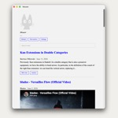

{
"UUID": "b25b11b9-4277-48a6-af96-699dfa9f620f",
"Title": "Mouser",
"ShortDescription": "My personal RSS feed",
"Year": 2025,
"FeaturedWork": "FALSE",
"URL": "rss-feed",
"Modality": [
"Digital"
],
"Medium": [
"App",
"MacOS"
],
"Tools": [
"HTML/CSS",
"Rust"
],
"Object": [
"App"
],
"Collaborators": [],
"Keywords": [
"Culture",
"Self",
"Technology",
"Web"
]
}Mouser is a macOS desktop app for reading RSS, Atom, Substack and YouTube feeds.
Articles are cached in SQLite, allowing the app to load recent content immediately, support pagination and search, and continue displaying previously downloaded items offline. Feeds refresh concurrently in the background every 15 minutes, while YouTube videos can be played directly inside the app. It also includes feed and theme management, archiving with automatic cleanup, and persistent local configuration.
I will be making updates to this project as my personal needs evolve.
| * | Title | Size (bytes) | View |
|---|---|---|---|
 | mouser | 72,382 | Load image |